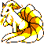
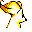

#038
Ninetales
Fire
Very smart and very vengeful. Grabbing one of its many tails could result in a 1000-year curse
Base stats Total 434
HP83
Attack76
Defense75
Speed100
Special100
Details
- Species
- Fox
- Height
- 3'07"
- Weight
- 44.0 lb
- Catch rate
- 75
- Base exp
- 178
- Growth
- Medium Fast
Level-up moves
LevelMoveType
StartEmberFire
StartTail WhipNormal
StartQuick AttackNormal
StartMach PunchFighting
Lv 9Fire SpinFire
Lv 12TackleNormal
Lv 14DisableNormal
Lv 20HypnosisPsychic
Lv 22Flame WheelFire
Lv 26Confuse RayGhost
Lv 32FlamethrowerFire
Lv 40Fire BlastFire
Evolution
Evolves from Vulpix
Where to find
TM / HM
TM06 ToxicTM07 Shadow BallTM08 Body SlamTM09 Take DownTM10 Double-EdgeTM15 Hyper BeamTM22 SolarbeamTM28 DigTM31 MimicTM32 Double TeamTM33 ReflectTM34 BideTM37 FlamethrowerTM38 Fire BlastTM39 SwiftTM42 Dream EaterTM44 RestTM50 Substitute